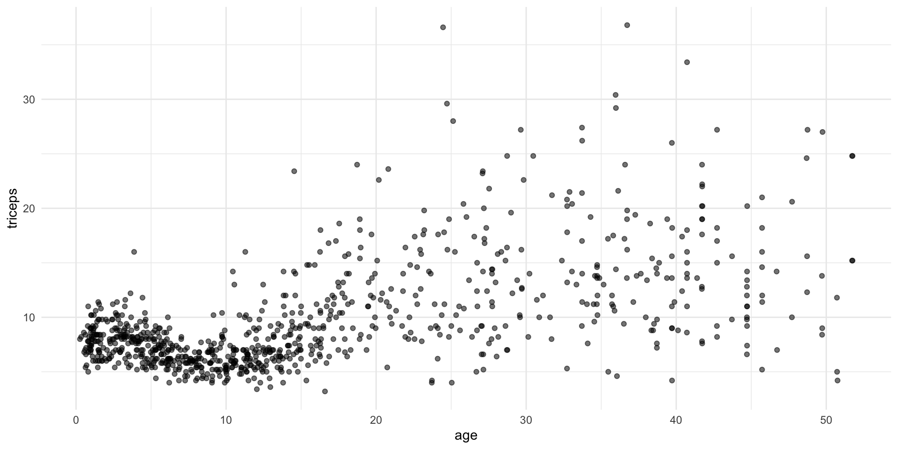
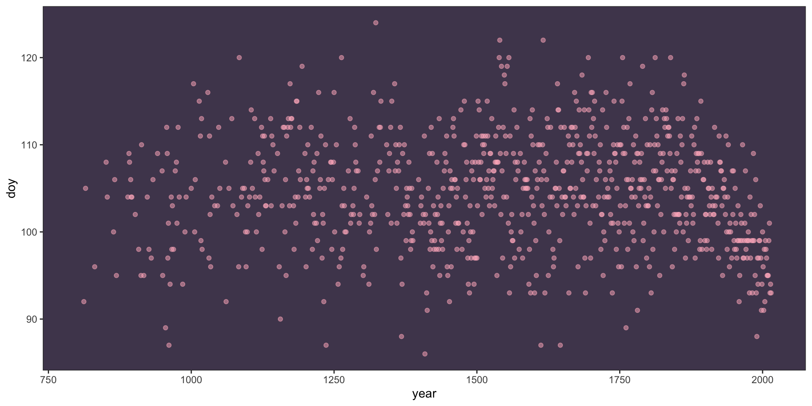
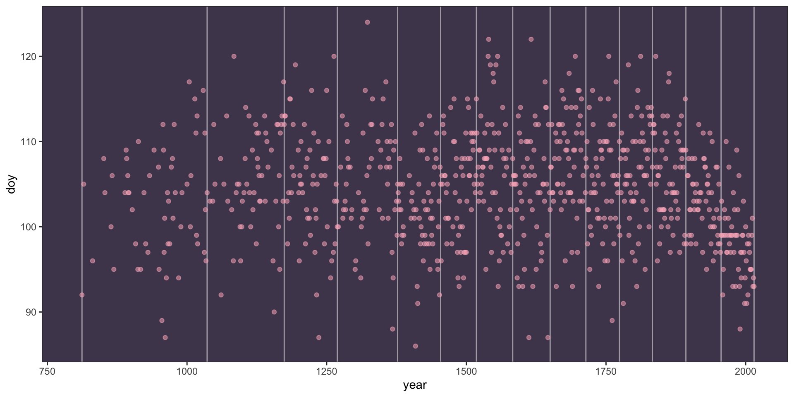
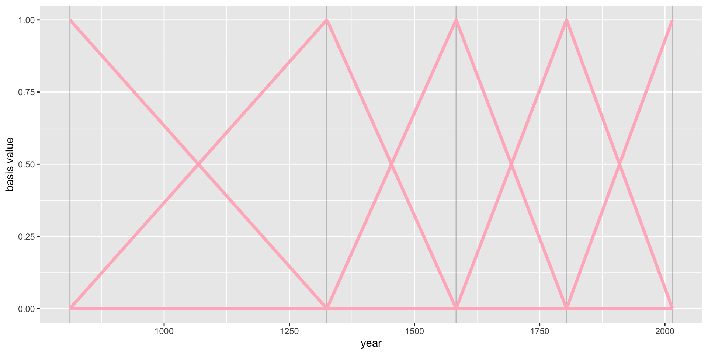
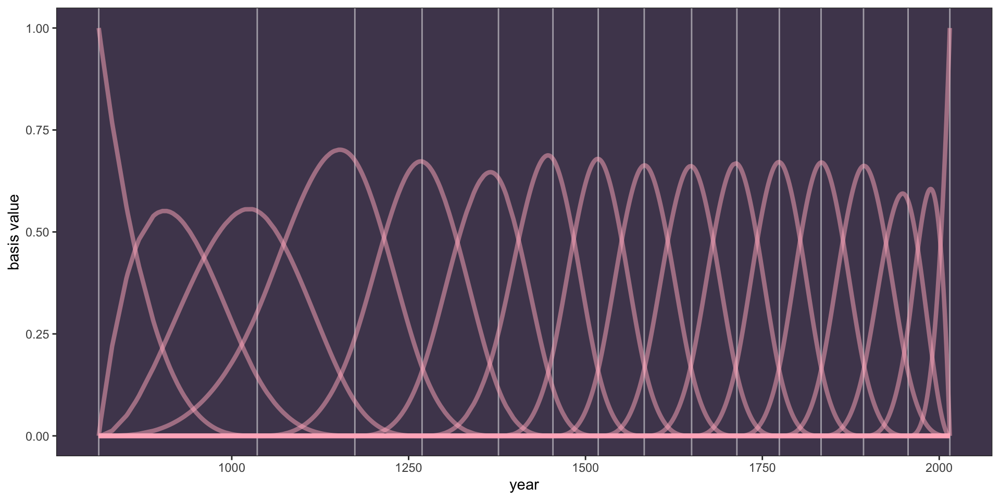
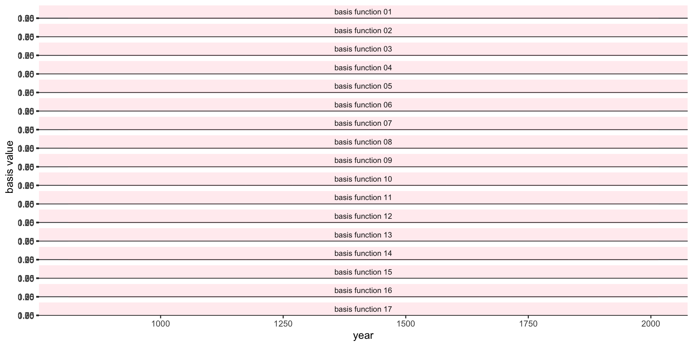
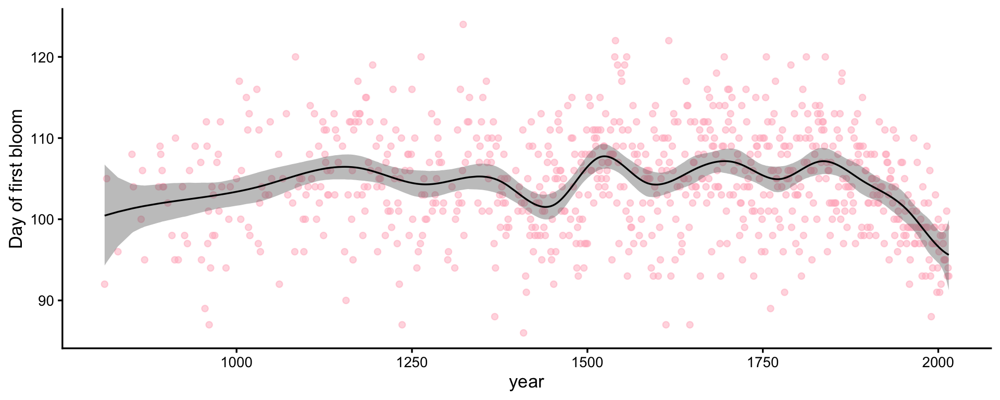
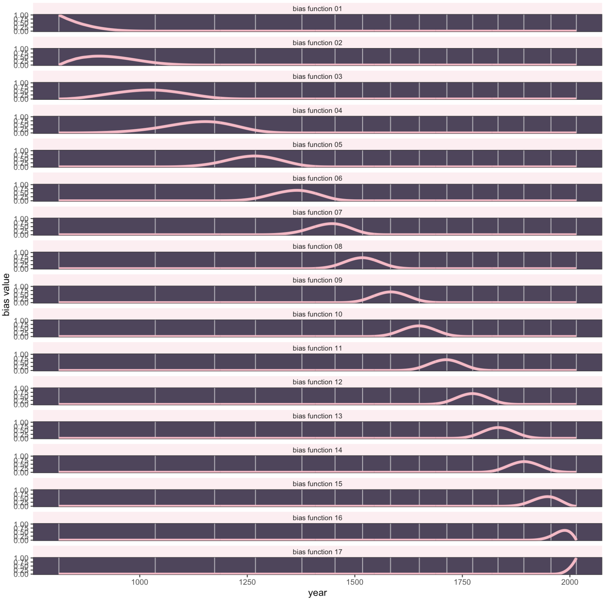

Standard models are simple to understand (lines!), but fail to capture complex associations. There are downsides to polynomial models, as they end up making bad predictions at the ends
We can do localized regression such as lowess, but it is nonparametric, so we can’t do standard inference with it
GAMs offer a middle ground: they can be fit to complex, nonlinear relationships and make good predictions in these cases, but we are still able to do inferential statistics and understand and explain the underlying structure of our models
Similar to going from general linear model to generalized linear model. One more generalization.
\[y \sim ExpoFam(\mu, etc.)\] \[E(y) = \mu\]
\[g(\mu) = b_0 + f(x_1) + f(x_2) \;...\;+f(x_p)\]
y still follows an exponential-family distribution, and μ is still related to the predictors via a link function. The key difference is that the linear predictor now incorporates smooth functions of at least some (possibly all) features, represented as f(x), and this will allow for nonlinear relationships between the features and the target variable y.
\[y = f(x) + \epsilon\]
Fitting \(f\) means choosing a basis: a set of functions that \(f\) is built from.
\[y = f(x) + \epsilon = \sum_{j=1}^{d}F_j(x)\beta_j + \epsilon\] Each Fj is a basis function that is the transformed x depending on the type of basis considered, and the b are the corresponding regression coefficients.
Think of the basis functions as, for example, the terms of a polynomial (\(x\), \(x^2\), …), though splines are more common.
\[f(x) = b_0 + w_1 B_{i, 1} + w_2 B_{i, 2} + w_3 B_{i, 3} + \dots\] These basis functions become extra variables used to predict, though each of them is often “hidden” behind the overly bland name “basis function”
We often want to fit flexible (non-linear) curves. What are options?
polynomial, but they make bad predictions at the ends
Localized regression such as lowess, but those are nonparametric
Piecewise: fit segments to different parts of the data, with breakpoints (knots) at predetermined places. But what if you don’t know where they go? What if you want the segments to connect?
“Continuous piecewise” = splines.

Basis function
\[y = \beta_0 + \beta_1 x + \beta_2 (x-k_1)_{+} + \beta_3 (x-k_2)_{+} + ... + \beta_6 (x-k_p)_{+} + \varepsilon\]
\[(x-k)_{+} = \begin{cases} 0, & \text{ if } x < k \\ x-k, & \text{ if } x \geq k\\ \end{cases}\]
regression model is written as a linear combination of these basis functions
GAMs offer a middle ground: they can be fit to complex, nonlinear relationships and make good predictions in these cases, but we are still able to do inferential statistics and understand and explain the underlying structure of our models
#|
d <- read_csv("cherry_blossoms.csv") # rethinking's cherry_blossoms; also at https://bayes27.netlify.app/cherry_blossoms.csv
d %>%
ggplot(aes(x = year, y = doy)) +
geom_point(color = "#ffb7c5", alpha = 1/2) +
theme_bw() +
theme(panel.background = element_rect(fill = "#4f455c"),
panel.grid = element_blank())
\[f(x) = w_1 B_{i, 1} + w_2 B_{i, 2} + w_3 B_{i, 3} + \dots\]
B-splines do not directly transform the predictor by squaring or cubing it.
Instead they invent a series of entirely new, synthetic predictor variables. Each of these synthetic variables exists only to gradually turn a specific parameter on and off within a specific range of the real predictor variable.
Each synthetic variable is called a basis function; the model estimates a weight (\(w\)) for each
How wiggly do you want it?
0% 7.142857% 14.28571% 21.42857% 28.57143% 35.71429% 42.85714% 50%
812 1036 1174 1269 1377 1454 1518 1583
57.14286% 64.28571% 71.42857% 78.57143% 85.71429% 92.85714% 100%
1650 1714 1774 1833 1893 1956 2015 
We no longer use year directly as the predictor; we use basis functions built from the knots.
The simplest (degree 1) basis functions are tents: each rises to 1 at its knot and falls back to 0 at the neighboring knots.

For degree 3 (cubic), four basis functions overlap at each point.
'bs' num [1:827, 1:17] 1 0.96 0.767 0.563 0.545 ...
- attr(*, "dimnames")=List of 2
..$ : NULL
..$ : chr [1:17] "1" "2" "3" "4" ...
- attr(*, "degree")= int 3
- attr(*, "knots")= Named num [1:13] 1036 1174 1269 1377 1454 ...
..- attr(*, "names")= chr [1:13] "7.142857%" "14.28571%" "21.42857%" "28.57143%" ...
- attr(*, "Boundary.knots")= num [1:2] 812 2015
- attr(*, "intercept")= logi TRUE 0% 100%
812 2015 Basis functions turn on parameters over different ranges of the x-axis. Parameters influence the shape.
# wrangle a bit
b <-B %>%
data.frame() %>%
set_names(str_c(0, 1:9), 10:17) %>%
bind_cols(dplyr::select(d2,year)) %>%
pivot_longer(-year,
names_to = "basis_function",
values_to = "basis")
# plot
b %>%
ggplot(aes(x = year, y = basis, group = basis_function)) +
geom_vline(xintercept = knot_list, color = "white", alpha = 1/2) +
geom_line(color = "#ffb7c5", alpha = 1/2, linewidth = 1.5) +
ylab("basis value") +
theme_bw() +
theme(panel.background = element_rect(fill = "#4f455c"),
panel.grid = element_blank())
#|
b %>%
mutate(basis_function = str_c("basis function ", basis_function)) %>%
ggplot(aes(x = year, y = basis)) +
geom_vline(xintercept = knot_list, color = "white", alpha = 1/2) +
geom_line(color = "#ffb7c5", linewidth = 1.5) +
ylab("basis value") +
theme_bw() +
theme(panel.background = element_rect(fill = "#4f455c"),
panel.grid = element_blank(),
strip.background = element_rect(fill = scales::alpha("#ffb7c5", .25), color = "transparent"),
strip.text = element_text(size = 8, margin = margin(0.1, 0, 0.1, 0, "cm"))) +
facet_wrap(~ basis_function, ncol = 1)
The basis functions become predictors; the model estimates one weight per basis function.
\[ \begin{aligned} \text{doy}_i &\sim \text{Normal}(\mu_i, \sigma) \\ \mu_i &= \alpha + \textstyle\sum_{k=1}^{17} w_k B_{k,i} \\ \alpha &\sim \text{Normal}(100, 10) \qquad w_k \sim \text{Normal}(0, 10) \qquad \sigma \sim \text{Exponential}(1) \end{aligned} \]
d2 <- d2 %>% mutate(B = B) # the 17 cubic basis functions as one matrix column
spline.1 <-
brm(doy ~ 1 + B, family = gaussian, data = d2,
prior = c(prior(normal(100, 10), class = Intercept),
prior(normal(0, 10), class = b),
prior(exponential(1), class = sigma)),
iter = 2000, warmup = 1000, chains = 4, cores = 4, seed = 4,
backend = "cmdstanr", file = "spline.1")fitted(spline.1) %>%
as_tibble() %>%
bind_cols(d2) %>%
ggplot(aes(x = year)) +
geom_point(aes(y = doy), colour = "#ffb7c5", alpha = .5) +
geom_ribbon(aes(ymin = Q2.5, ymax = Q97.5), fill = "grey40", alpha = .4) +
geom_line(aes(y = Estimate)) +
labs(y = "Day of first bloom") +
theme_classic(base_size = 13)
The wiggliness comes from our choice of 15 knots. More knots = wigglier; fewer = smoother. Can the model choose?
s()s(x) builds a penalized spline basis (via {mgcv}). The basis weights get a hierarchical prior whose SD, sds(), is estimated: a small sds shrinks the weights toward a straight line. It’s partial pooling again, this time for wiggliness.
d2 <- d2 %>% mutate(year_c = (year - mean(year)) / 100) # centuries from the mean year
gam.1 <-
brm(doy ~ 1 + s(year_c), family = gaussian, data = d2,
prior = c(prior(normal(100, 10), class = Intercept),
prior(exponential(1), class = sigma)),
iter = 2000, warmup = 1000, chains = 4, cores = 4, seed = 4,
control = list(adapt_delta = .95),
backend = "cmdstanr", file = "gam.1")gam.1 summary Family: gaussian
Links: mu = identity
Formula: doy ~ 1 + s(year_c)
Data: d (Number of observations: 827)
Draws: 4 chains, each with iter = 2000; warmup = 1000; thin = 1;
total post-warmup draws = 4000
Smoothing Spline Hyperparameters:
Estimate Est.Error l-95% CI u-95% CI Rhat Bulk_ESS Tail_ESS
sds(syear_c_1) 25.27 8.43 13.41 44.71 1.00 1133 1791
Regression Coefficients:
Estimate Est.Error l-95% CI u-95% CI Rhat Bulk_ESS Tail_ESS
Intercept 104.54 0.21 104.12 104.94 1.00 4323 2970
syear_c_1 -62.96 25.82 -116.91 -15.30 1.00 1984 2448
Further Distributional Parameters:
Estimate Est.Error l-95% CI u-95% CI Rhat Bulk_ESS Tail_ESS
sigma 6.02 0.15 5.74 6.33 1.00 4247 2705
Draws were sampled using sample(hmc). For each parameter, Bulk_ESS
and Tail_ESS are effective sample size measures, and Rhat is the potential
scale reduction factor on split chains (at convergence, Rhat = 1).sds(syear_c_1) is the wiggliness. The syear_c_1 coefficient is the linear part of the smooth; the rest of the curve lives in the penalized basis weights.
predictions(gam.1, newdata = datagrid(year_c = seq(min(d2$year_c), max(d2$year_c), length.out = 200))) %>%
mutate(year = year_c * 100 + mean(d2$year)) %>%
ggplot(aes(x = year)) +
geom_point(data = d2, aes(y = doy), colour = "#ffb7c5", alpha = .5) +
geom_ribbon(aes(ymin = conf.low, ymax = conf.high), fill = "grey40", alpha = .4) +
geom_line(aes(y = estimate)) +
labs(y = "Day of first bloom") +
theme_classic(base_size = 13)Give the smooth 40 basis functions instead of the default 10:
gam.2 <-
brm(doy ~ 1 + s(year_c, k = 40), family = gaussian, data = d2,
prior = c(prior(normal(100, 10), class = Intercept),
prior(exponential(1), class = sigma)),
iter = 2000, warmup = 1000, chains = 4, cores = 4, seed = 4,
control = list(adapt_delta = .95),
backend = "cmdstanr", file = "gam.2")
spline.1 <- add_criterion(spline.1, "loo")
gam.1 <- add_criterion(gam.1, "loo")
gam.2 <- add_criterion(gam.2, "loo")
loo_compare(spline.1, gam.1, gam.2) model elpd_diff se_diff p_worse diag_diff diag_elpd
spline.1 0.0 0.0 NA
gam.2 -4.4 4.2 0.85
gam.1 -6.8 5.0 0.91 s(), the penalty decides how wiggly the curve gets, so you don’t have to agonize over the number of knots.gam.2 had a handful of divergent transitions: smooths with many basis functions can be hard to sample. Raise adapt_delta (e.g., .99) before trusting it.